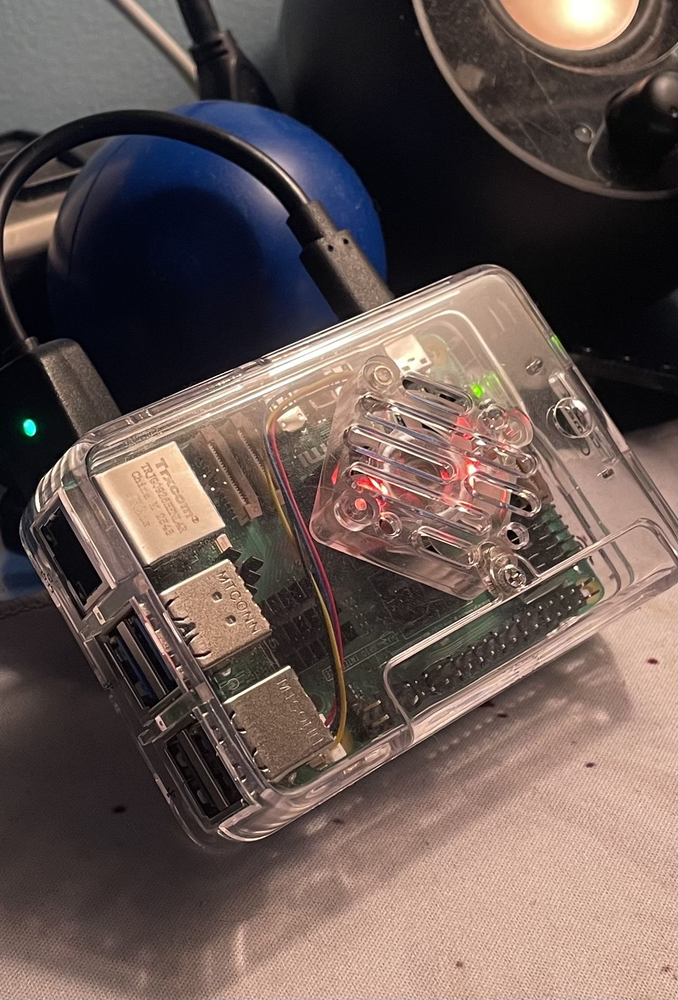
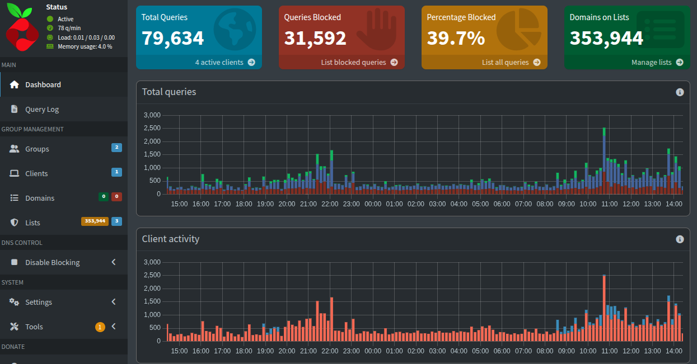

It all started when my brother began a networking class. I would hear him go on and on about data privacy and how big companies are basically farming us for information. The idea began to grow on me that maybe I should take a stand against this. And albeit a small stand. I started with my raspberry pi.
I had been aware of the raspberry pis' existence for quite some time. However, I only recently purchased one for myself. The reason being, I want to make a fun homelab. I have a background in computer and data science and having a playground at home with no disasterous reprecussions is a very nice bonus. I wont have to worry about my services having 100% uptime or data breaches and I can test out new ideas for automation and learning.
Currently, I have setup docker and pi-hole. I would like to learn more about vpn's and the risks associated with portforwarding before I move on to my next step, WireGuard.

Along with pihole, I have configured a recursive DNS Cache using unbound. It was a bit of a hassle to set up because I am still learning my way around docker. Regardless, it's up and running now, my hurdle involved installing unbound natively instead of containerizing it. Then I had to learn more about the docker network and configure unbound to allow the docker network through. If I had done a little bit more research, I would have known to containerize unbound so that I could bridge the two which would lead to easier configuration of automation. (This is changed later)